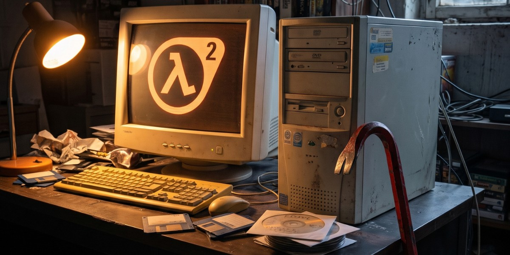

Geekotidien · Édition du 16 novembre 2026
Half-Life 2 Ep. 3
Une version de 2008 d'Episode 3 aurait fuité avec son code source

Le code source d'une version de 2008 de Half-Life 2 : Episode 3 aurait fuité en ligne, selon PCGuide.
Selon la même source, la communauté a recompilé ce code pour rendre le jeu jouable.
Cette information n'est pas confirmée à ce stade.
Le + : Valve n'a pas réagi, et de fausses fuites ont déjà circulé.